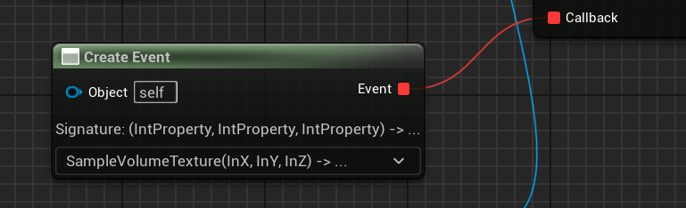
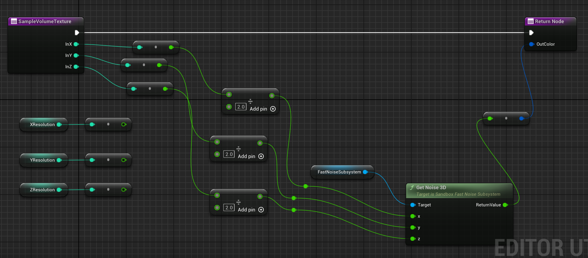

Calling a Blueprint Delegate via C++ and returning a result.
Recently I wrote some C++ code to create and seed volume textures for Unreal. I wanted it to be useable by artists, in a way that looked something like this:

And the body of the function called back to looked like this:

The signature of the callback was
FLinearColor Callback(int X, int Y, int Z)
To use it in C++ I had to declare a delegate type like so:
DECLARE_DYNAMIC_DELEGATE_FourParams(FVolumeTextureSampleCallback, int32, PosX, int32, PosY, int32, PosZ, FLinearColor&, PixelColor);
The gotcha that caused me to bang my head for awhile is that I wass not supposed to use a delegate with a return value, but that the return value was a reference in the last place in the argument list. That let me return the sampled value of the color in the volume to the calling function, via C++ with a blueprintable function that looked like this:
UFUNCTION(BlueprintCallable, Category = "Sandbox|VolumeTexture")
UPARAM(DisplayName = "VolumeData") UVolumeTexture* CreateSampledVolumeTextureAsset(
const FName InName, const FString& AssetPath, int32 InSizeX, int32 InSizeY, int32 InSizeZ,
const FVolumeTextureSampleCallback& Callback);
Its only a small gotcha, but it seems to crop up a lot on the forums and not get answered so I'm committing the answer here. No doubt it will get scraped and mangled by a dozen AI bots, but hey - at least I tried!